OHBM Hackathon 2021 - TrainTrack
🧠💻
Reproducible Workflows
Stephan Heunis
 @fMRwhy
@fMRwhy
 jsheunis
Psychoinformatics lab
jsheunis
Psychoinformatics labInstitute of Neuroscience and Medicine, Brain & Behavior (INM-7) |
|
| Şeyma Bayrak
sheyma
Otto Hahn Group Cognitive Neurogenetics |
|
Agenda
- Overview (15 min)
- Practical aspects (7 min)
- Step 1: share data and code (30 min)
- Step 2: (-- min)
- Step 3 (-- min)
- Step 4 (-- min)
Overview
You've just published a paper that calculated the cortical thickness for a group of research participants. You've run some statistical tests and visualized the results.
| 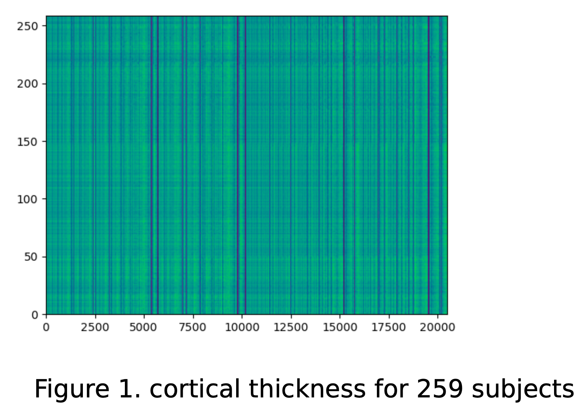 | 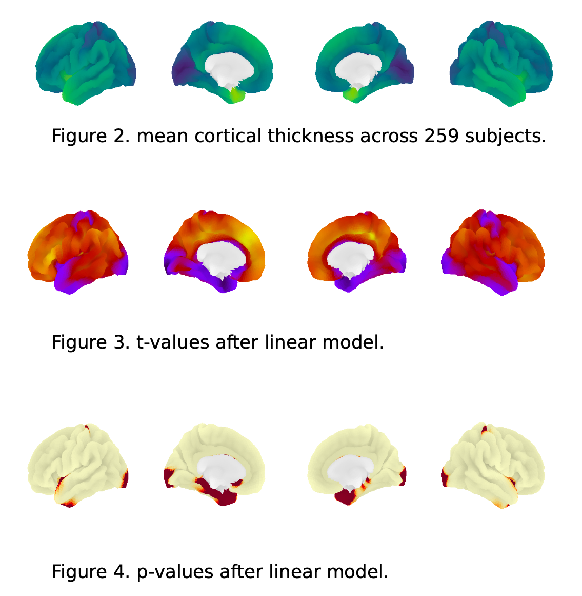 |
Overview
Soon after, a researcher in your field sends you an email:
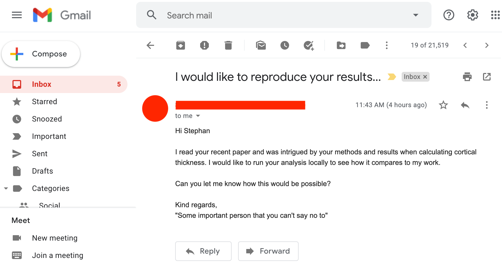Overview
Our goal for this hands-on session is to guide you through the use of several tools for creating a reproducible workflow so that you can go...
|
from reacting like this: |
to reacting like this: |
Overview
There are many routes to follow, and many tools to help you on your way. We are going to take a step-wise, "Galaxy brain" approach:
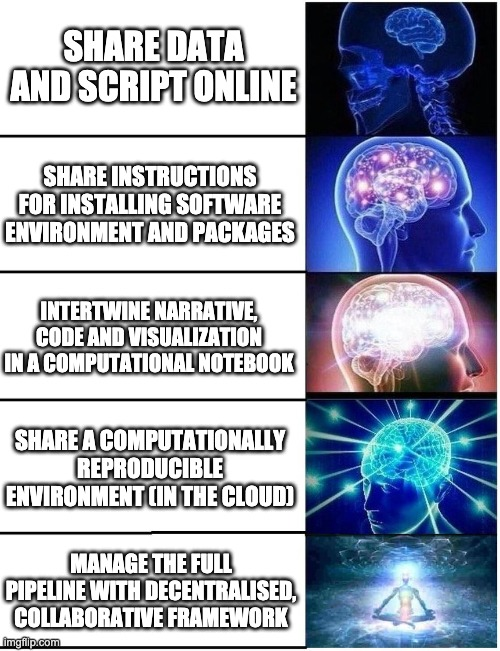Overview
By the end of this session, you should be able to do the following STEPS:
- Set up a `requirements.txt` file that specifies package requirements
- Specify and set up a virtual environment to install requirements
- Share code, installation, and running instructions via GitHub
- Transform your code into a Jupyter notebook
- Set up your code repository to run in the cloud with Binder
- Understand how containers can play a role in this context
- Understand the benefits of data management with DataLad
Practical aspects
- You can follow along without having any specific software or tools installed on your machine.
- You just need a good internet connection and your browser.
-
We use
 Google Colab and
Google Colab and
 myBinder
as cloud-based tools to demonstrate and run the tasks in the workshop.
myBinder
as cloud-based tools to demonstrate and run the tasks in the workshop.
- However, if you have the required software/packages installed locally, feel free to run the tasks on your system (we'll provide instructions).
 Google Colab
Google Colab myBinder
myBinderPractical aspects
-
Hands-on!
- You will be doing a lot of tasks yourself (together with all of us)
- The laptop icon (💻) indicates a task for you
- The eyes icon (👀) means we'll demonstrate something
- The speech bubble icon (💬 ) indicates time for discussion/opinions
- Feel free to ask questions at any time (via chat, voice, or video) bbl
- Live polls, please participate!
- Useful links:
Practical aspects
Who are you?
http://etc.ch/j6myPractical aspects
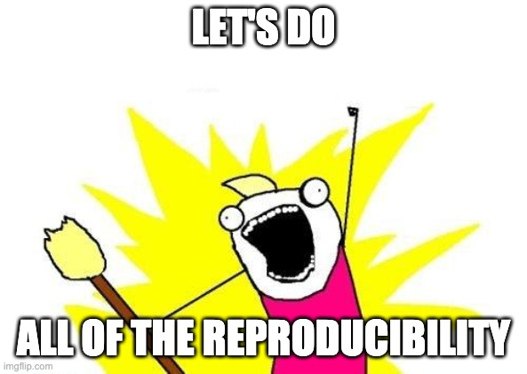Step 1: share data and code
Why don't we just send them the data and code "via" a download link?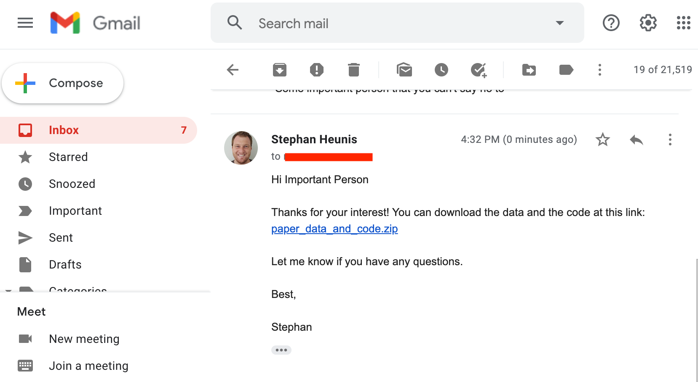
Step 1: share data and code
Why don't we just send them the data and code "via" a download link?💻 Try it yourself:
- paper_data_and_code.zip
- 💬 What can go wrong?
Step 1: share data and code
💬 Why don't we just send them the data and code "via" a download link?- You have to create a link and send an email every time someone requests it
- There are no instructions included for running the analysis
- The person might not have the correct software or package versions installed
- They could perhaps figure out from the code which packages are required, but installing them might interfere with their existing environment, which might break things down the line.
Step 1: share data and code
So they tried running the script on their machine, and then...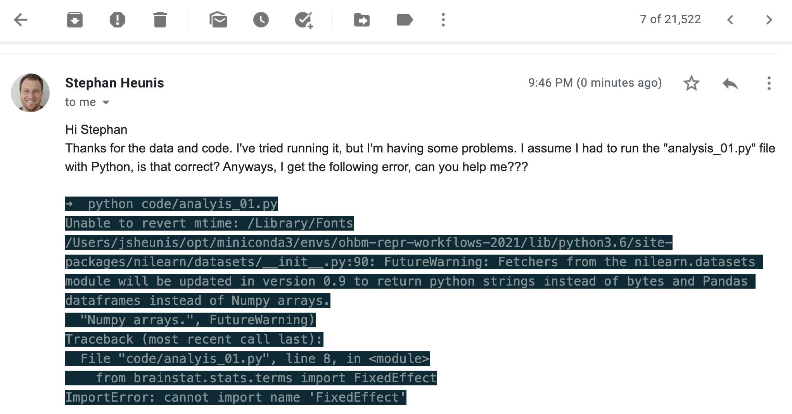
💬 What went wrong? What should we have done?
Step 1: share data and code
To prevent this issue (or similar issues), while still allowing others to run the code on their machines, we need to share:| 1. | The required packages | requirements.txt |
| 2. | The Python version | virtual environment |
| 3. | Instructions for how to use these to successfully run the script | README |
| 4. | Data and code and all of the above in an accessible location | GitHub |
Step 1: share data and code
We'll start with adding our data and code to Github:In your browser (👀 💻)
- Create a GitHub account if you don't already have one
- Create a new repository ("ohbm-handson-test") with a README and MIT License
- Upload the
codeanddatadirectories to your repository - You can only upload max 100 files at once, so you will have to upload the data files in steps
- Take care to keep the correct directory structure
- Commit (i.e. save) these uploads
Step 1: share data and code
We'll start with adding our data and code to Github:From the command line (💻)
- Create a GitHub account if you don't already have one
- Create a new repository ("ohbm-handson-test") with a README and MIT License
- Copy the repository URL
- Clone the repository to your machine, and navigate to it
- Copy the
codeanddatadirectories to your repository - Commit the changes to git
- Push the changes to GitHub
Step 1: share data and code
We'll start with adding our data and code to Github:From the command line (💻)
#!/bin/bash
ROOTDIR=[where-you-want-to-save-the-repo]
REPOURL=[insert-your-repo-URL]
REPONAME=[insert-your-repo-name]
CONTENTDIR=[insert-path-to-paper_data_and_code-directory]
cd $ROOTDIR
git clone $REPOURL
cd $REPONAME
cp -R $CONTENTDIR/* .
git add --all
git commit -m "add data and code to repo"
git push origin main
Step 1: share data and code
Next, we'll add instructions to the README:In your browser (👀 💻)
- Click on the edit button (🖊️) next to "README" on the repo's main page
- Write in your own words: the content of the repo and how to run the analysis
- Editing is done in Markdown format (cheat sheet)
- You can "Preview" your changes while editing
- If you don't want to use your own words, use the content from our example
- Commit (i.e. save) these changes
Step 1: share data and code
Next, we'll add instructions to the README:From the command line (💻)
- Open the "README.md" file in your favourite text editor
- Write in your own words: the content of the repo and how to run the analysis
- Editing is done in Markdown format (cheat sheet)
- If you don't want to use your own words, use the content from our example
- Commit the changes to
git - Push the changes to GitHub
Step 1: share data and code
Next, we'll add instructions to the README:From the command line (💻)
#!/bin/bash
# After editing and saving the README file
# Make sure you are located in the repo's root directory
git add README.md
git commit -m "add description to readme"
git push origin main
Step 1: share data and code
We have not yet specified the software or package requirements and we have not explained how to set up a virtual environment. We'll address these as our next main step in the hands-on session.
| 1. | The required packages | requirements.txt | ? |
| 2. | The Python version | virtual environment | ? |
| 3. | Instructions for how to use these to successfully run the script | README | ✅ |
| 4. | Data and code and all of the above in an accessible location | GitHub | ✅ |
Well done on achieving your first milestone towards creating a reproducible workflow! 🥳🥳🥳
Step 1: share data and code
"Galaxy brain" update: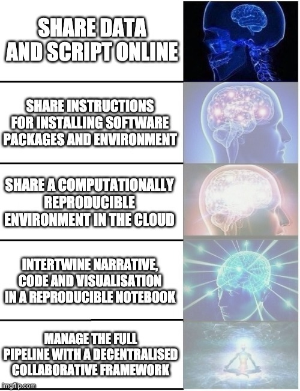
Step 2: software environment and requirements
After sharing the news about the public GitHub repo with our colleague, we get the following reply: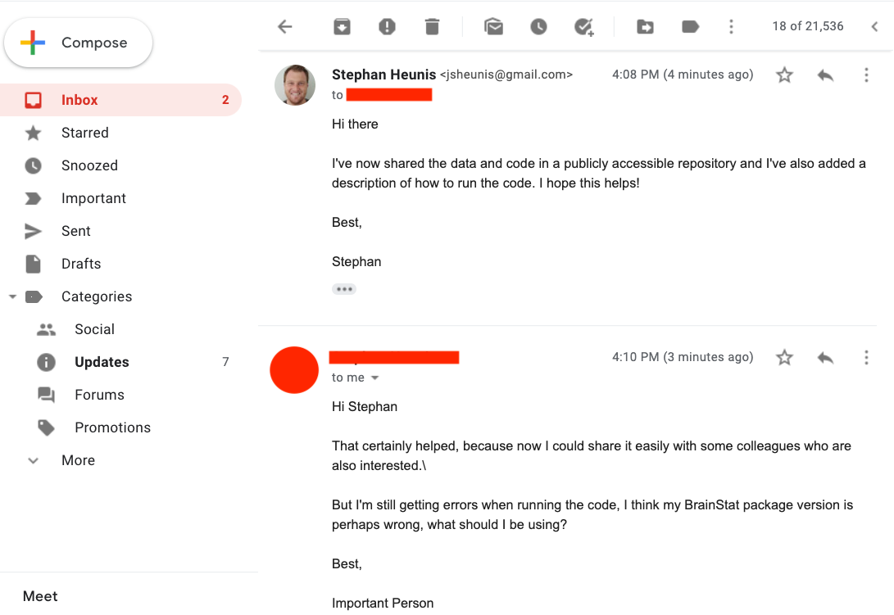
Now we'll focus on requirements and virtual environments
Step 2: software environment and requirements
Introducing requirements.txt
- Single file to capture required Python packages
- Makes installation straight-forward with
pip:
pip install -r requirements.txt
matplotlib==3.2.2
numpy>=1.16.5
pandas
nibabel
nilearn>=0.7.1
sklearn
brainspace
💻 Now, create your own
requirements.txt file and add it to your GitHub repo
(either in your browser or via git).
Step 2: software environment and requirements
Introducing requirements.txt
pip and a requirements.txt
file might not be sufficient:
- Check whether some packages/tools might have to be installed differently:
- APT: for managing packages (retrieval, configuration and installation) on Unix-like computer systems
- conda: Package, dependency and environment management for any language running on Windows, macOS and Linux
- Add extra installation instructions to README
Step 2: software environment and requirements
Introducing Virtual Enviroments
|

|
Step 2: software environment and requirements
Introducing Virtual Enviroments
#!/bin/bash
pip install virtualenv #install the package
virtualenv --python=python3 mypythonenv #create a new virtual environment
source mypythonenv/bin/activate #activate the virtual environment
# now install your packages with pip and do the analysis
deactivate #deactivate the virtual environment
#!/bin/bash
# install miniconda using install files via link
conda create -n mypythonenv python=3.6
conda activate mypythonenv
# now install your packages with conda and/or pip and do the analysis
conda deactivate #deactivate the virtual environment
Step 2: software environment and requirements
Introducing Virtual Enviroments
- An intro sentence to mention that a virtual environment can be used to run the code
- Instructions on how to install the virtual environment manager
- Instructions on how to create and activate the virtual environment
- Instructions on how to install all packages using
requirements.txt - Lastly, instructions on how to run the analysis (if not already included)
Step 2: software environment and requirements
Congrats!You've achieved Level 2 of being a Reproducible Workflows Magician!
| 1. | The required packages | requirements.txt | ✅ |
| 2. | The Python version | virtual environment | ✅ |
| 3. | Instructions for how to use these to successfully run the script | README | ✅ |
| 4. | Data and code and all of the above in an accessible location | GitHub | ✅ |
Step 2: software environment and requirements
So we send the update to our colleague: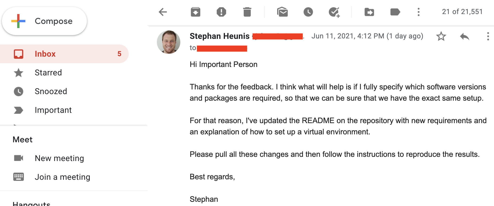
Step 2: software environment and requirements
"Galaxy brain" update: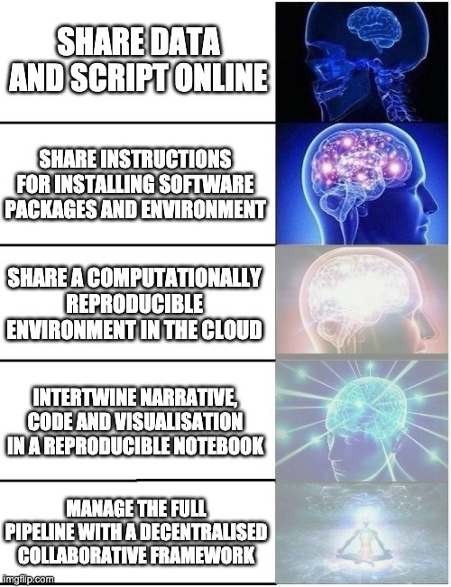
Step 2: software environment and requirements
Well done!!Step 3: cloudy containers
So you decide to chill out now that everything should be working, right? Unfortunately, our feeling of accomplishment is short-lived, because Professor Important Dude is back with another question..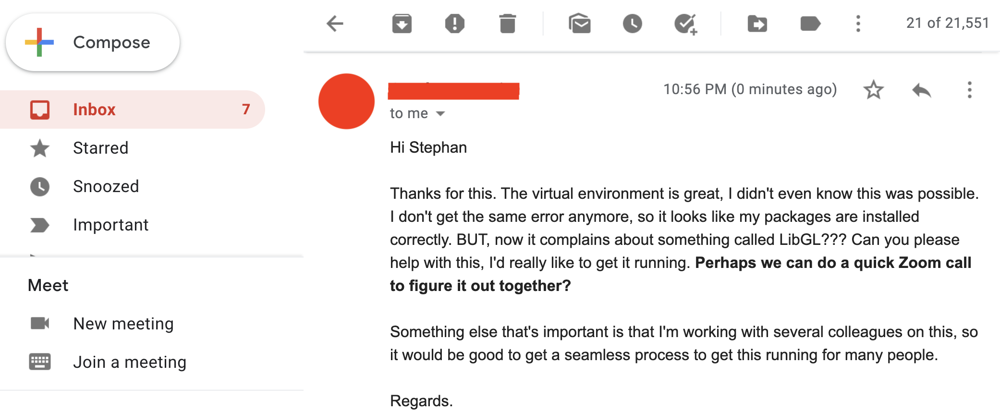
Step 3: cloudy containers
And then you realise... many things. At the same time:- Damn, you forgot about the OpenGL/LibGL requirement
- You really don't want to have another Zoom call in this pandemic
- You absolutely don't want to have multiple Zoom calls forever
So you cry out in desperation: Why can't it just work on their machines?!
Step 3: cloudy containers

Step 3: cloudy containers
Introducing containers
- As we've seen, sharing code and data and even the virtual environment setup may not be enough for reproducibility
- Also, even for moderately complex projects, the size of the software dependency stack can be
- An alternative is to take a snapshot of the whole computational environment, including operating system and all software dependencies, to allow reproducibility
- Useful resources:
Step 3: cloudy containers
Introducing containers
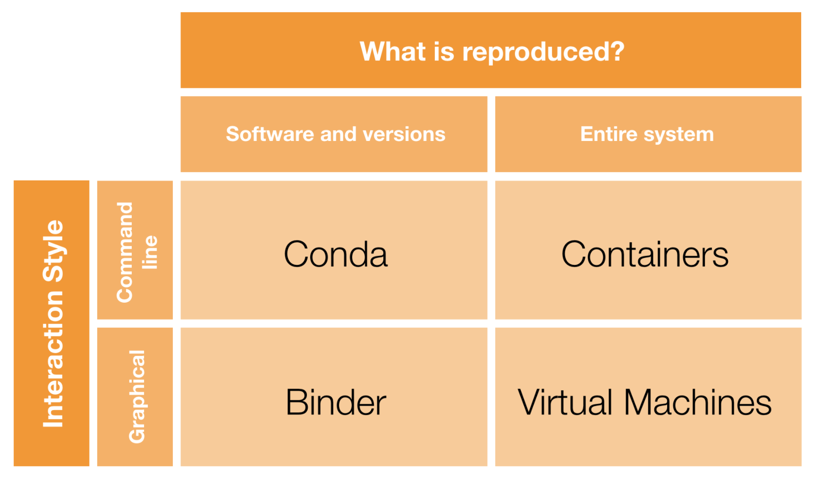But we don't want to have to explain how to install yet another tool. Ideally, we can run everything in the cloud...
Step 3: cloudy containers
Introducing Binder
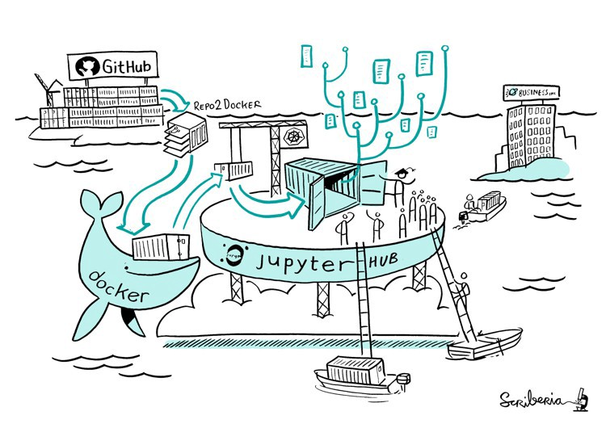Step 3: cloudy containers
- Code and data in a public GitHub repository ✅
- Specify environment configuration:
environment.ymlfor conda ❓requirements.txtfor Python/PIP ✅apt.txtfor Unix-based software ❓- Add any extra tasks to
postBuild❓ - Generate a link to a Binder environment ❓
- Add the Binder link to your repo's README ❓
Step 3: cloudy containers
- We already have a
requirements.txtfile with most packages - 💻 Remember the LibGL issue? We can let Binder install that with
apt.txt:
libgl1-mesa-dev
xvfb
postBuild:
#!/bin/bash
git clone https://github.com/MICA-MNI/BrainStat.git
cd BrainStat
python3 setup.py build
python3 setup.py install
cd ..
export DISPLAY=:99.0
which Xvfb
Xvfb :99 -screen 0 1024x768x24 > /dev/null 2>&1 &
sleep 3
exec "$@"
Step 3: cloudy containers
Status update:- Code and data in a public GitHub repository ✅
- Specify environment configuration ✅
- NOTE: using
environment.ymlinstead ofrequirements.txtto specify the configuration is also possible. It all depends on which packages are available via which distribution service. For an example of setting up our repository usingenvironment.yml, see the conda-env branch of the repo. For a variety of options for configuration files see the Binder documentation. - Add any extra tasks to
postBuild✅ - Generate a link to a Binder environment ❓
- Add the Binder link to your repo's README ❓
💻 Now we still have to "Binderize" everything!
Step 3: cloudy containers
💻 mybinder.org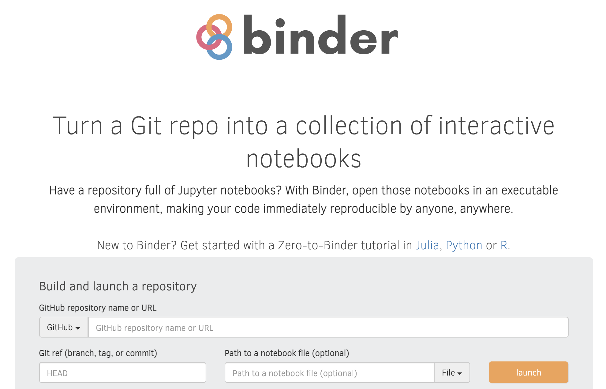
Step 3: cloudy containers
Status update:- Code and data in a public GitHub repository ✅
- Specify environment configuration ✅
- Add any extra tasks to
postBuild✅ - Generate a link to a Binder environment ✅
- 💻 Add the Binder link to your repo's README
- While the Binder is building, add the Binder image and link to your README
- Once the Binder build is successful, it should open a Jupyter environment
- Now we have a complete environment for reproducing your results IN THE CLOUD!!!
Step 3: cloudy containers
We can't hold our excitement, so we send a quick email to notify the colleague: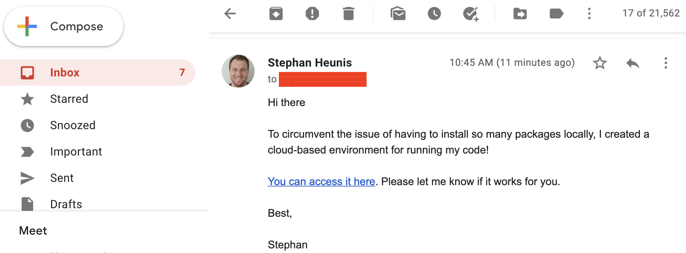
Step 3: cloudy containers
"Galaxy brain" update: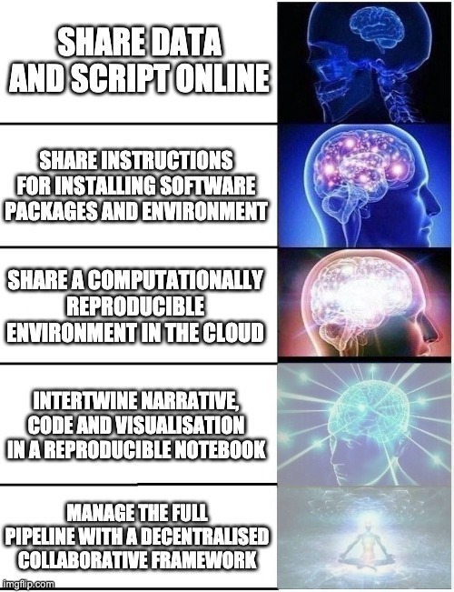
STEP 4: Interplanetary sci-comm
So, you're busy (rightfully) thinking that you have done a great job of making your work more reproducible, but then ... it looks like we spoke too soon. Our VIP friend has another request...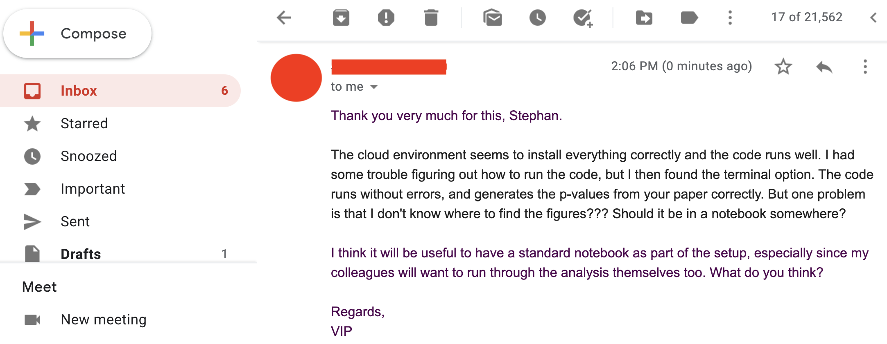
STEP 4: Interplanetary sci-comm
So firstly, it works for them!!! (Always try and celebrate the wins in academia, however big or small.)Secondly, let's take a deeper look into this notebook thing. And what's with Jupiter?
STEP 4: Interplanetary sci-comm

STEP 4: Interplanetary sci-comm
Jupyter notebooks:
- Can be installed (amongst other methods) with
condaandpip
conda install -c conda-forge notebook
pip install notebook
STEP 4: Interplanetary sci-comm
- Open the Binder link
- Click on New > Python 3
- Use the editing funcitons to add/edit/move cells
- Use Markdown cells for narrative content (as in the README)
- Use code cells for Python code
- Have a look at this static example for guidance
STEP 4: Interplanetary sci-comm
Show and tell!

STEP 4: Interplanetary sci-comm
This is what you have achieved!
STEP 4: Interplanetary sci-comm
"Galaxy brain" update: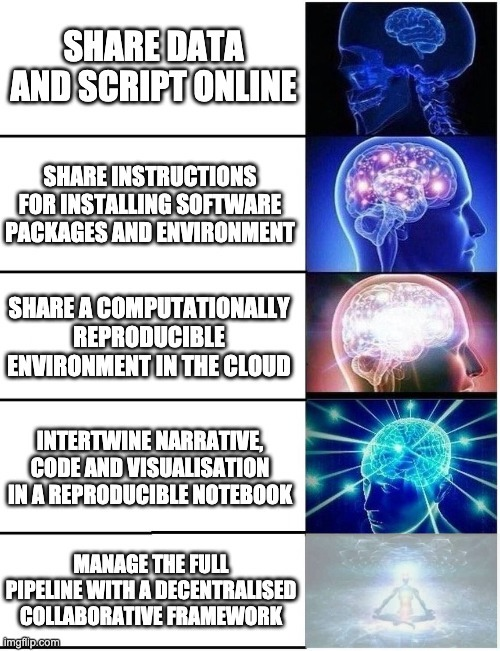
STEP 5: Reproducible data management
- Data version control
- Provenance capture
Introducing 
STEP 5: Reproducible data management
in brief
- A command-line tool with Python API
- Build on top of Git and Git-annex
- Allows...
- ... version-controlling arbitrarily large content,
- ... easily sharing and obtaining data (note: no data hosting!),
- ... (computationally) reproducible data analysis,
- ... and much more
- Completely domain-agnostic
- Available for all major operating systems (Linux, macOS/OSX, Windows): installation instructions
- Detailed documentation: DataLad Handbook
STEP 5: Reproducible data management
DataLad version control helps you get...From this:  |
To this:  |
STEP 5: Reproducible data management
DataLad SUMMARY - LOCAL VERSION CONTROL
-
datalad createcreates an empty dataset. - Configurations (-c yoda, -c text2git) are useful.
- A dataset has a history to track files and their modifications.
- Explore it with Git (git log) or external tools (e.g., tig).
datalad saverecords the dataset or file state to the history.- Concise commit messages should summarize the change for future you and others.
datalad statusreports the current state of the dataset.
STEP 5: Reproducible data management
DataLad SUMMARY - Nesting and Consumption
- A DataLad dataset is a folder/directory with files
- Subdirectories and their content can be part of the superdataset, or they can be DataLad datasets themselves (nested subdatasets)

STEP 5: Reproducible data management
DataLad SUMMARY - Nesting and Consumption
datalad cloneinstalls a dataset.- It can be installed “on its own”: Specify the source (url, path, ...) of the dataset, and an optional path for it to be installed to.
- Datasets can be installed as subdatasets within an existing dataset.
- The --dataset/-d option needs a path to the root of the superdataset.
- Only small files and metadata about file availability are present locally after an install.
- To retrieve actual file content of larger files,
datalad getdownloads large file content on demand.
STEP 5: Reproducible data management
DataLad SUMMARY - Nesting and Consumption
- Content can be dropped to save disk space with
datalad drop. - Do this only if content can be easily reobtained.
- Datasets preserve their history.
- In nested datasets, the superdataset records only the version state of the subdataset.
STEP 5: Reproducible data management
DataLad SUMMARY - Nesting and Consumption
- A modular structure makes individual components (with their respective provenance) reusable.
- Nesting can flexibly link all components and allows recursive operations across dataset boundaries
- Read all about this in the chapter on YODA principles

STEP 5: Reproducible data management
DataLad SUMMARY - Computational reproducibility
- Code may produce different results or fail with different software
- Datasets can store & share software environments and execute code inside of the software container
- DataLad extension:
datalad-container
datalad-containers run

STEP 5: Reproducible data management
DataLad SUMMARY - Getting started
- Read the DataLad handbook
- An interactive, hands-on crash-course (free and open source)
- Check out or used public DataLad datasets, e.g., from OpenNeuro
-
$ datalad clone ///openneuro/ds000001 [INFO ] Cloning http://datasets.datalad.org/openneuro/ds000001 [1 other candidates] into '/tmp/ds000001' [INFO ] access to 1 dataset sibling s3-PRIVATE not auto-enabled, enable with: | datalad siblings -d "/tmp/ds000001" enable -s s3-PRIVATE install(ok): /tmp/ds000001 (dataset) $ cd ds000001 $ ls sub-01/* sub-01/anat: sub-01_inplaneT2.nii.gz sub-01_T1w.nii.gz sub-01/func: sub-01_task-balloonanalogrisktask_run-01_bold.nii.gz sub-01_task-balloonanalogrisktask_run-01_events.tsv sub-01_task-balloonanalogrisktask_run-02_bold.nii.gz sub-01_task-balloonanalogrisktask_run-02_events.tsv sub-01_task-balloonanalogrisktask_run-03_bold.nii.gz sub-01_task-balloonanalogrisktask_run-03_events.tsv - 💻 Walk through the DataLad tutorial on Binder